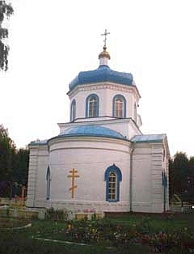
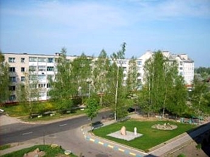
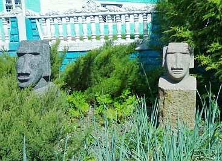

ФотогалереяПредлагаю совершить небольшую экскурсию по достопримечательным местам Климовщины,посмотреть памятники архитектуры и древнего зодчества. Свято-Михайловская церковь.Об эпохе позднего классицизма напоминает ещё одна
реликвия - Свято-Михайловская церковь, построенная в 1866 году
благодаря инициативе генерал-губернатора М. Муравьёва. |
Ночной вид городских фонтанов.Фонтан возле ресторана "Свiтанак". |
|
Фонтан возле редакции районной газеты. |
Праздник Купалы.В ночь на Ивана Купала существовал обычай жечь костры и прыгать через них с целью очищения от немощей и болезней, умываться купальской росой, которая приносит силу, искать «папараць-кветку», дабы обрести способность заглядывать в будущее. Праздник Иван Купала - это ещё и разгул нечисти: по преданию ведьмы и колдуны крали с неба месяц и звёзды. |
Новостройки в районе техноторгового центра «Гарант».Вид на новостройки в районе техноторгового центра «Гарант». |
Центральная часть города.Центральная часть города в районе автостанции. |
Городской парк.Центральная аллея городского парка. |
|
Беседка для отдыха. |
|
Детская игровая площадка. |
|
Скульптурная композиция в одном из уголков городского парка. |
|
Памятник на братской могиле советских воинов, погибших в годы Великой Отечественной войны при освобождении Климовичского района от немецко-фашистских оккупантов. |
Климовичский историко-краеведческий музей. Старинный особняк княжеского рода
Мещерских,
являющийся памятником деревянного зодчества XIX века. |
Гостинница «Дружба».Гостинница «Дружба». В
непосредственной близости от неё находятся парк отдыха, городской дом
культуры и краеведческий музей. |
Климовичский ликёро-водочный завод.
Одной из достопримечательностей города является крупнейший в
стране ликеро-водочный завод, расположенный на живописном берегу
Лобжанки -
притока Сожа. |
Река Лобжанка.
Река Лобжанка — левый приток реки Сож на территории
Климовичского (начинается у деревни Недведь) и Кричевского районов. |
Аграрный колледж.Климовичский государственный аграрный колледж - старейшее среднее сельскохозяйственное учреждение образования Республики Беларусь. В 2007 году колледжу исполнилось 75 лет со дня его основания. |
Моаи с острова Пасхи. Каменные статуи моаи с отрова Пасхи,
в которых, по повериям местных жителей, |
Памятник ИС-3.В преддверии 70–летия освобождения восточных регионов Могилевщины от немецко-фашистских захватчиков, а также Дня танкистов он установлен на улице Ленина. 7 сентября 1945 года тяжелые танки ИС-3 прошли по улицам
поверженного Берлина в составе 71-го гвардейского тяжелого танкового
полка 2-й гвардейской танковой армии, приняв участие в параде союзных
войск в честь окончания Второй мировой войны. |
|
Выражаю огромную признательность Колейчику В.В., Махлову А.Д., Захарченко В.И. за предоставленные фотографии.
|